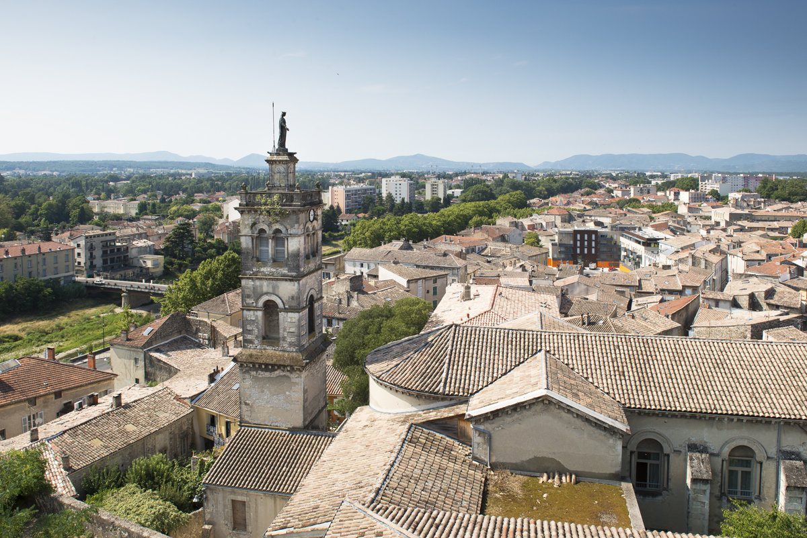

Hébergements

Le lieu de la réception, à savoir Allan dans la Drôme, se trouve à moins de 10 minutes en voiture du plein centre-ville et de la Gare de Montélimar.
Deux solutions sont possibles pour venir en train :
- Soit arriver directement à la gare de Montélimar ;
- Soit arriver à la gare de Valence TGV.
Dans les deux cas, une location de voiture vous sera indispensable, sachant que des loueurs sont présents à chacune de ces gares.
Sachant que le village de Chomérac où se déroulera la Cérémonie se trouve à environ 40 minutes de voiture d’Allan, nous vous conseillons de trouver un logement proche de Montélimar / d’Allan.
À cette fin, nous vous proposons ici une liste bien évidemment non exhaustive de logements se situant à proximité.
Cette liste de logements étant mise à jour régulièrement sur Airbnb ou encore sur Gîtes de France, nous vous conseillons également de chercher par vous-même.
Nous restons toutefois à votre disposition si vous avez besoin d’un conseil !